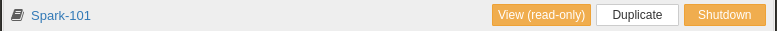
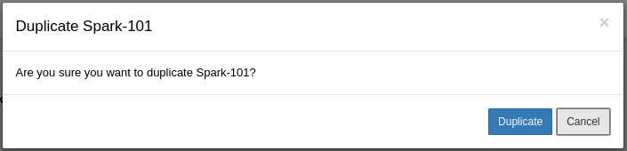
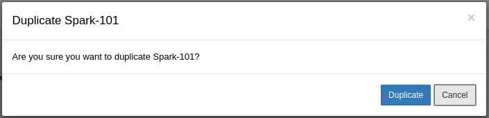
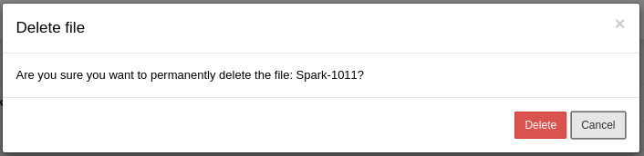
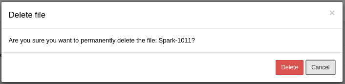

Documentation
The Notebook Browser
The Notebook browser consists of three tabs: Files, Running and Cluster
Files Tab
This tab shows the file browser and gives quick access to the notebooks hosted in this server. The folder structure allows for a familiar hierarchical organization of the notebooks. The Spark Notebook comes loaded with many examples that will show in the file browser. These examples are the best way to get familiar with the notebook. Feel free to explore them after this tutorial.
Each Notebook entry consists of the Notebook name and several function buttons:  * ** Click ** on the notebook name will open the notebook in the interactive editor.  * View (read-only): opens the notebook in read-only mode. The notebook contents will be rendered in the same state as they were last saved. This mode also allows for a "follow along" visualization: Other user can open the same notebook in interactive mode, and the read-only visualization will be updated as changes happen in the interactive mode.
* View (read-only): opens the notebook in read-only mode. The notebook contents will be rendered in the same state as they were last saved. This mode also allows for a "follow along" visualization: Other user can open the same notebook in interactive mode, and the read-only visualization will be updated as changes happen in the interactive mode.  * Duplicate: Creates a new copy the selected notebook.
* Duplicate: Creates a new copy the selected notebook.  It will pop a dialog asking for confirmation.  * ** Delete | Shutdown ** : This button changes mode with the state of the notebook: * Shutdown - If the notebook is currently running, this button will display "shutdown", allowing us to shutdown the running notebook. (see the #notebook section for more details on the runtime)
It will pop a dialog asking for confirmation.  * ** Delete | Shutdown ** : This button changes mode with the state of the notebook: * Shutdown - If the notebook is currently running, this button will display "shutdown", allowing us to shutdown the running notebook. (see the #notebook section for more details on the runtime)  * Delete - a stopped notebook can be deleted from the filesystem.
* Delete - a stopped notebook can be deleted from the filesystem.  It opens a dialog to confirm the operation. ** This operation cannot be undone ** 
It opens a dialog to confirm the operation. ** This operation cannot be undone ** 
The Running Tab
This tab shows a summary of the notebooks currently running in the system. Learn more about notebook resources. [TODO - link to resource usage] In this view, the notebook listing only show the View (read only) and Shutdown buttons described above.
The Clusters Tab
This tab lets the user to create pre-defined configurations corresponding to the environment(s) that the notebook can connect to. In particular, this permits the specification of one or more Spark/Hadoop ecosystems for the Notebook to run against.
Next: Notebook Deep Dive